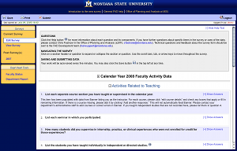

Check out our projects by visiting the links below. If the site requires a login just use the username "demo" and the password "demo".
Faculty Activity Database
The Faculty Activity Database (FAD) is an application that is used annually to collect performance data for all faculty at Montana State University. FAD provides department heads, deans, and administrators with data collected directly from faculty once per year. The core of the FAD data is defined by the "Delaware" study which provides a standard set of data that can be used to do cross-institutional comparisons. Additionally, to avoid redundant data collection processes for the faculty additional MSU specific data are included in the process, which means faculty can spend less time answering the same questions more than one time.
FAD is in its third year of use with the new system and the results have been positive. Initially there were concerns from faculty about data privacy issues, from departments about giving up department specific data collection when moving to a more uniform system, and from all participants about the shift from an arcane paper based performance review system to an online system. These concerns were addressed throughout the first two years, during the third year -- where the system is able to use data previously entered and data extracted from other sources automatically -- feedback has been significantly positive.
The FAD system has provided a large amount of information that the Yogo team has integrated into the development plans. User management, time dependent vs time independent data, form usability, role based user interfaces and tools, and management of multiple data sets. Each of these pieces of functionality are critical to the overall success of the Yogo Toolkit and having the opportunity to prototype them in the context of a production system provides concrete requirements and gives the developers the necessary knowledge and experience to design and implement each of these pieces of functionality in the best way known.
For example, at Montana State University like many universities, the academic hierarchy begins at the lowest level with adjunct faculty or instructors, then professors, then department heads or chairs, then deans, then the provost. The interesting thing is that in many instances the department collects and holds much more information for each professor and adjunct than the college or the provosts office. There's a level of trust with a department head that is not necessarily the same as with the college, so faculty would like some information to not be visible outside the department. This means FAD has to support not only roles and role based access control, but it has to support a hierarchical role model that essentially imitates the existing management structure at the university. This was implemented in the original FAD implementation, then it was revised so that each person had a set of tools that was appropriate to their role: faculty had forms to fill out, previous forms to view and/or copy, department heads had forms to fill out as well, but they also had a dashboard indicator of which faculty had started and finished their annual reviews, departement heads could also view any faculty members review if that faculty member was in their department. Deans might have an annual review to fill out, if they have faculty obligations to fulfill, but most don't. However, Deans do have a dashboard of tools that lets them see the progress of each department towards annual review completion, with some basic indicators of comparative performance among departments in their colleges. The provost doesn't directly use the system, his data is processed by another office that administers the system for the university and one person in that office is the adminstrator. She has the ability to see everyone, including all the answers to the core questions that she's included in the annual review form, and some statistics and reports of those collected data, however she does not look at the department only data.